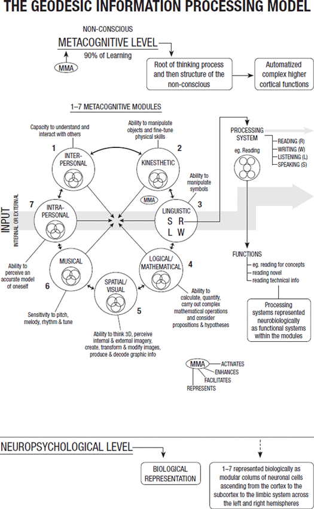
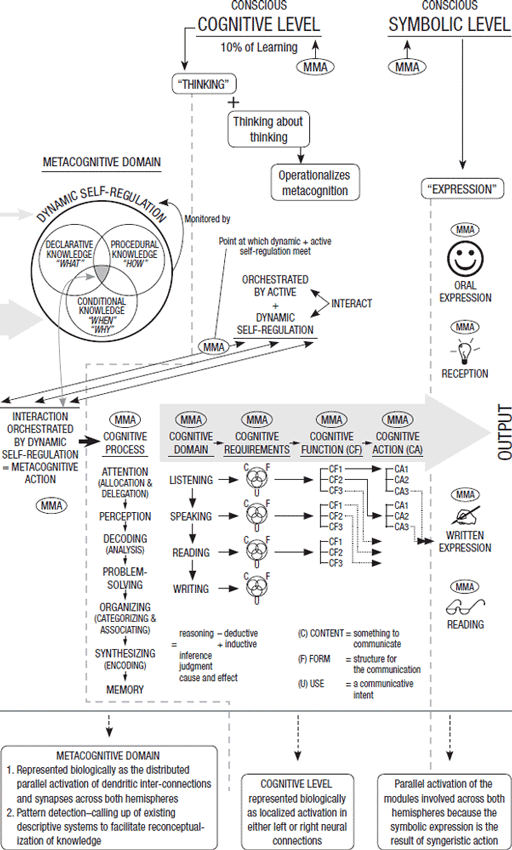

8
The Science of Thought
Main Scripture: Therefore put away all filthiness and rampant wickedness and receive with meekness the implanted word, which is able to save your souls. James 1:21 ESV
Linked Science Concept: What you wire into your brain through thinking is stored in your nonconscious mind. The nonconscious mind is where 99.9 percent of our mind activity is. It is the root level that stores the thoughts with the emotions and perceptions, and it impacts the conscious mind and what we say and do. Everything is first a thought. The Geodesic Information Processing Theory is a scientific way of understanding this.
The brain is not an input-output machine. You are not an input-output machine. You are not a computer mirroring the outside world. Your brain is designed to respond to your mind. You are intrinsically and brilliantly designed in the sense that your brain carries out the will of the spirit and the soul. Internal activity in your mind is where everything begins, “for as he thinks in his heart, so is he” (Prov. 23:7).
The Power of Your Thought Life
In my research, I spent many years trying to understand science in terms of the truths of Scripture. I researched, developed, and tested a theory that can basically be described as explaining the science of thought—or in simple terms, how we think and the effect of our thoughts on our brain, body, and mind. I applied this in many ways with my patients and in my research over time.[1]
If you look at the image of my theory, “The Geodesic Information Processing Theory” on pages 126–27, it will help you understand this internal activity, the science of thought, a little better.
Before I explain this in a simple way, let me tell you why I am doing this. When you understand the power of your thought life, which has been the emphasis of the first seven chapters in this book, you truly begin to get a glimpse of how important it is to take responsibility for what you are thinking. Thinking is a powerful creative force, both a blessing and a curse, and should not be taken lightly. So, in exposing you to a tested scientific theory, albeit briefly in this chapter, I am giving you some tangible proof (not the only proof) that God was so serious about us capturing our thoughts and renewing our minds that he gave us science as encouragement.
Thomas More explains this so well in his book Utopia:
The scientific investigation of nature is not only a most enjoyable process but also the best possible means of pleasing the Creator. . . . He has the normal reactions of an artist. Having put the marvelous system of the universe on show for human beings to look at—since no other species is capable of taking it in—He must prefer the type of person who examines it carefully, and really admires his work, to the type that just ignores it and like the lower animals remains quite unimpressed by the whole astonishing spectacle.[2]
You will see there are three levels on the schematic of my theory: (1) Nonconscious metacognitive level; (2) Conscious cognitive level; and (3) Symbolic output level.
Nonconscious Metacognitive Level
The nonconscious metacognitive level is on the far left. It is where 90 to 99 percent of the action in your mind is; your thinking and thought-building happen on this level. This level operates at about four hundred billion actions per second and drives the conscious cognitive level. It operates twenty-four hours a day.
Conscious Cognitive Level
The conscious cognitive level, in the middle, is where up to 10 percent of mind action is. It operates at about two thousand actions per second, so it is much slower and is controlled by the metacognitive level. The cognitive level in turn drives the symbolic output level (end section), which is what you say and do—what the world sees, the output of your thinking. This level operates when we are awake.
Symbolic Action Level
The symbolic output level incorporates the five senses through which you express yourself and experience the world, serving as the contact between the external world and the internal world of your mind. Therefore, this model works in reverse as well, forming a perfect circle. So information comes through the five senses, is received consciously by the conscious cognitive level, and then passes into the nonconscious metacognitive level where—if you have paid attention and started thinking and choosing—it becomes a physical thought as a result of genetic expression (the making of proteins). This newly built physical thought will, in turn, impact your conscious cognitive and symbolic levels—and so the cycle goes on.


21-Day Brain Detox Plan
Whatever you think about the most will grow, so the more the cycle moves with a particular thought, the stronger it grows. This is in essence the Quantum Zeno Effect (QZE) taking place that I explained in chapter 7. It takes around twenty-one days of this cycling for all the necessary protein changes[3] to happen to create a long-term integrated memory.
This is why my brain detox plan is for twenty-one days. You can’t just apply a thought once and think change has happened. It takes repeated work for the QZE to take effect. Each day something is happening to the thought in your nonconscious mind. So if you stop at day 4 or 5, which is often when people do give up, then the consequence will be that the memory denatures—which means it dies and becomes heat energy. Simply put, you forget.
You Feel the Pull
It’s important to note that we feel the pull of the sensory information coming in through the symbolic level, but we don’t have to go there. These are the events and circumstances from the outside world. The events and circumstances from the outside world also enter into our minds and brains through electromagnetic and the quantum worlds (chap. 7). Remember, we cannot control the events and circumstances of our lives, but we can control our reactions. Don’t be reactive; take time to slow down and think (see chaps. 4, 5, and 6).
Our five senses activate an emotional response almost immediately, but if we don’t take the time to process them, the unprocessed emotion will dominate. This is why all the keys I am describing in part 1 of this book are so important; they help you deal with this pull.
Satan tries to take advantage of the pull of the five senses through this symbolic level, and he would love it if you respond impulsively to them. But you are made in God’s image with the mind of Christ, and Jesus told his disciples that all power had been given to him (Matt. 28:18). If all power was given to Jesus, how much power does Satan have? None. When you truly let that sink in, you will realize that you control your reactions, your thinking, and your choices.
What Lies Are You Believing?
It’s through the senses that we receive Satan’s lies, but—and this is important—we don’t have to believe those lies. If we do believe them, we process them into physical realities (through the conscious cognitive to the nonconscious metacognitive) that form the substance of the nerve networks upon which we act. This means that if we listen to and believe the Enemy’s lies, we actually choose to process them into physical realities inside our brains. In doing so, we create the evil and act upon it. But we do not have to believe Satan’s lies. We as humans create evil when we collapse these probabilities into actualities (chap. 7). So evil does not come from God, obviously, yet people often say that if God created everything, then he created evil as well. God has given us the power to create: this creative force can become good or evil through our choices.
Current neuroscientific and quantum physics research confirms that our thoughts change our brains daily. In fact, neurological literature has coined the term “self-directed neuroplasticity” as a general description of the principle that deep thinking changes brain structure and function.[4] This plastic ability of the brain to change in a positive or negative direction depending on our state of mind is called the plastic paradox. Positive plasticity produces positive behavior, and negative plasticity produces negative behaviors.
Distorted Love and Truth Get Wired In
When we distort love and truth, we wire this perversion into our brains and, in a sense, create brain damage. This is not an exaggeration, because our brains are wired for love, not fear, and therefore all the circuits—neurochemical, neurophysiological, neurobiological, electromagnetic, and quantum—are geared up for healthy, not toxic, thinking. If we allow ourselves to learn fear, it creates chaos and havoc in our brains.[5]
For example, one study showed that when patients with OCD remained toxic, obsessing and worrying about an issue, their brains showed damage and incorrect firing.[6] The researcher saw a decrease in activity in the lateral prefrontal cortex (just above your temples) where the circuits would normally have generated and maintained strategy. The medial orbital frontal cortex (behind your eyes) became more imbalanced and busy, which meant their decision-making ability became impaired. In addition, the amygdala (deep inside the middle of your brain running backward from the corner of your eyes) showed less balanced activity, so the patients were not evaluating emotional significance correctly. All this negative brain activity changed positively once the researcher put the patients through a rigid, directed, mental activity program.
If you look back to the chart of my theory again (see pp. 126–27), the bottom part beneath the horizontal line represents the neurological level that I have been describing throughout this book. Essentially the first three levels all describe mind activity, and the bottom level shows that this mind activity signals a change in brain structure. So my theory, the Geodesic Information Processing Theory, falls within the realm of cognitive neuroscience.
I show in my theory that the brain works in neurological pillars and multiple parallel circuits, which means there is a lot of interconnectivity among the neurons.[7] Essentially, the Geodesic Information Processing Theory deals with the science of thought. It is a description of how we think, choose, and build thoughts and the impact of this on our brain and behavior. It is our choices that make something out of nothing. This is basically cognitive neuroscience in action: the mind-brain connection.
My Switch On Your Brain 21-Day Brain Detox Plan, which is based on my theory and research, is designed to help improve your thinking and choices and subsequent happiness and health. It is our choices that create healthy thought universes in our brain, or they turn the powerless lie into a toxic thought universe in our brain. This is the incredible power God has given us: to be able to think and choose and create reality.
Automatization and Riding a Bicycle
After a period of repeated thinking about a choice over two to three cycles of twenty-one days, the new thought moves into the nonconscious metacognitive level, where it becomes part of our internal perception. This process is called automatization.
A simple example of automatization is learning to ride a bike. Initially, it was difficult and you wobbled all around. But as you practiced with determination—which means you applied the QZE—and intensely concentrated on the sequence of how to ride a bike, suddenly one day you were riding perfectly. It appeared as though having mastered the skill of bike riding meant you were not thinking about the process of cycling because now you rode the bike automatically. But you were actually thinking very nonconsciously—I know that makes no sense yet, so read on.
All the focused, dedicated, and repeated practice you consciously put into the learning process over time created a very strong thought network. Once the skill was mastered with the repeated and focused practice, it moved from the conscious mind (cognitive level) to the nonconscious mind (metacognitive level). Even though you were not consciously aware of the how-to-ride-a-bicycle thought, it was very much alive, and it was the guiding force behind the cycling. So each time you got on your bike, this memory was still in your metacognitive nonconscious guiding your bicycle riding. And as you ride around on your bike, you bring that thought into your conscious mind and it becomes malleable (plastic and changeable), and a few new branches are added as you cycle over that challenging mountain path or speed-jump over a log trying to keep up with your teenage son. So when you get off that bike, that “cycling thought” has become enriched from the experience you have just gone through.
Automatization Is a Life Principle
Automatization applies to everything in your life, because everything you do and say is first a thought. This means nothing happens until you first build the thought, which is like the root of a tree buried under the ground. The thought produces words, actions, behavior, and so on, which can be compared to the tree, branches, leaves, flowers, and fruit you see above the ground. The roots under the ground are like the nonconscious metacognitive mind that nourishes and supports the tree, keeping it alive twenty-four hours a day.[8] The nonconscious metacognitive mind operates and nourishes your conscious cognitive mind twenty-four hours a day.
The nonconscious metacognitive mind is filled with the thoughts you have been building since you were in the womb, and they form the perceptual base from which you see life. Up to 99 percent of the decisions you make are based on what you have built and automatized into your nonconscious metacognitive level.[9] If a person’s nonconscious metacognitive mind is filled with negative, toxic trash, then that is what informs his or her decisions on a day-to-day basis, which means that person will speak and act from toxicity. This is metacognitive to cognitive to symbolic—as per my theory.
Obviously the opposite of toxicity is health, and we were originally designed by God for health because we are made in God’s image (Gen. 1:26). So we begin with health and then move away through bad choices. Most of the time we are a mix of healthy and toxic—you determine the proportions of these two for yourself.
You cannot sit back and wait to be happy and healthy and have a great thought life; you have to make the choice to make this happen. You have to choose to get rid of the toxic and get back in alignment with God. You can be overwhelmed by every small setback in life, or you can be energized by the possibilities they bring.
Chapter 8 Summary
Now, as you move into part 2 of this book, remember the eight keys from chapters 1 through 8 and refer back to them often to get the most out of the 21-Day Brain Detox:
Now step into part 2 and switch on your brain!